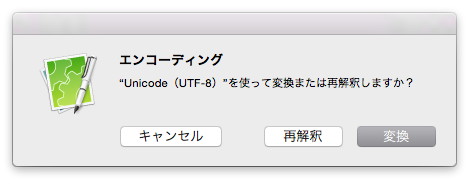

文字化けする
文字化けは、ファイルの文字エンコーディングを CotEditor が正しく認識できなかった場合に発生します。次の手順で文字エンコーディングを変更してください。
- 「フォーマット」メニューの「エンコーディング」を開き、適切な文字エンコーディングを選択します。
- 「再解釈」をクリックします。

ダイアログのボタンの動作は、次の通りです。
- 再解釈
- 指定されたエンコーディングでファイルを開き直します。
- 変換
- 現在のテキストを指定されたエンコーディングに変換します。
- キャンセル
- 操作を取り消します。書類には何も変更は加えられません。